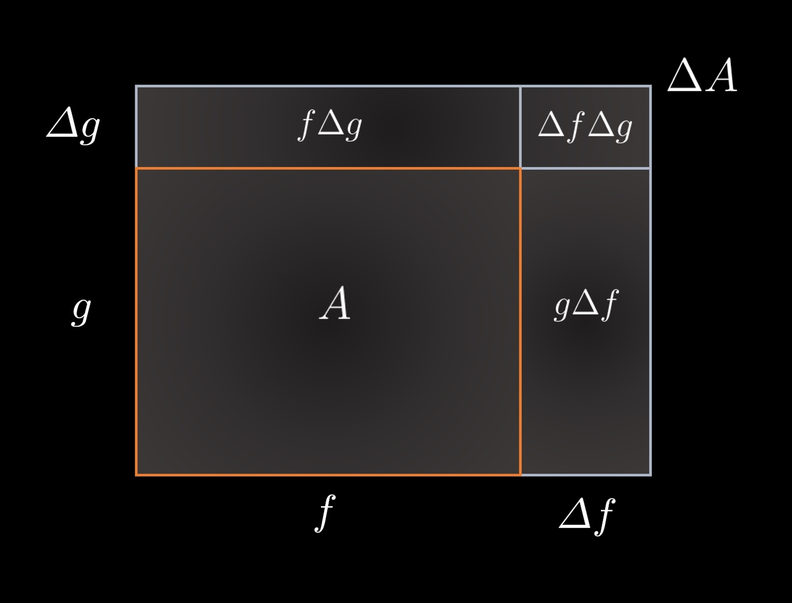
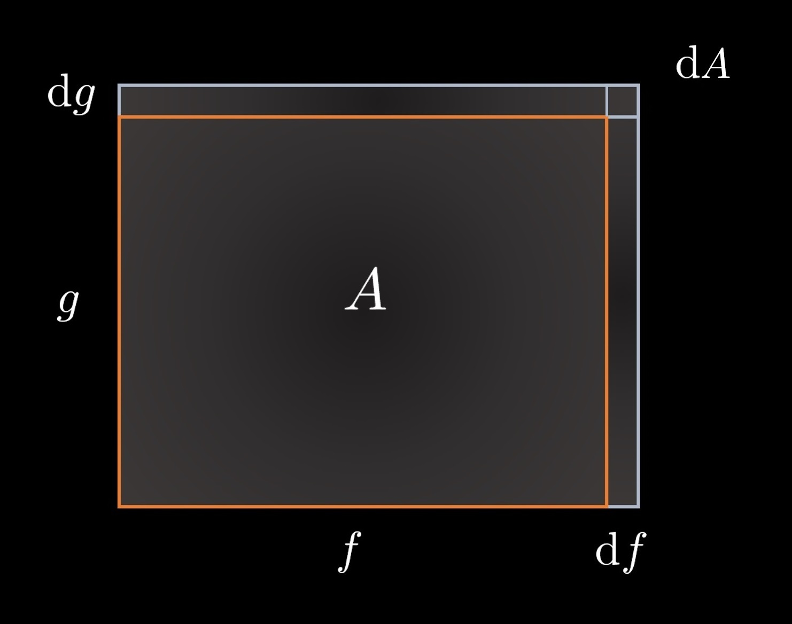

2.3 — The Product and Quotient Rules
In section 2.2, we introduced the basic rules for differentiation—the property of linearity and the power rule—and covered the derivatives of the transcendental functions \(\sin(x), \cos(x)\), and \(e^x\). In this section, we will present the product and quotient rules. For the remainder of this section, we will refer to \(f(x)\) and \(g(x)\) as \(f\) and \(g\), respectively, to make our formulas easier to comprehend.
Let us analyze a geometric interpretation of the product rule. Consider Fig. 2-3.1, in which a rectangle with dimensions \(f\) by \(g\) is drawn, with an area \(A\). Changes in the length of the sides, \(\Delta f\) and \(\Delta g\), cause a change \(\Delta A\) in the area.

Fig. 2.3-1. A rectangle of dimensions \(f\) by \(g\) has an area \(A\). Changes in the sides of the rectangle, \(\Delta f\) and \(\Delta g\), create a change in the area \(\Delta A\).
We can therefore write the change in area, \(\Delta A\), of the rectangle as
\(\displaystyle \Delta A = f \Delta g + g \Delta f + \Delta f \Delta g\). \((1)\)
Dividing by \(\Delta x\) gives\(\displaystyle \frac{\Delta A}{\Delta x} = f \frac{\Delta g}{\Delta x} + g \frac{\Delta f}{\Delta x} + \frac{\Delta f \Delta g}{\Delta x}\). \((2)\)
Now let us consider the case in which \(\Delta x\) is made infinitely small. Recall that, using Leibniz notation, \(\displaystyle \frac{\textrm{d} f}{\textrm{d}x}\) can be written as \(\displaystyle\lim_{\Delta x \to 0} \frac{\Delta f}{\Delta x} \). Fig. 2.3-2 shows the effect of shrinking \(\Delta x\).

Fig. 2-3.2. A reduction in \(\Delta x\) shrinks the size of \(\Delta f\) and \(\Delta g\), and, as \(\Delta x\) approaches \(0\), the infinitely small quantities \(\Delta f\) and \(\Delta g\) are represented by \(\textrm{d} f\) and \(\textrm{d} g\), respectively.
We can therefore say that\(\displaystyle \lim_{\Delta x \to 0} \frac{\Delta A}{\Delta x} = \lim_{\Delta x \to 0} \left( f \frac{\Delta g}{\Delta x} + g \frac{\Delta f}{\Delta x} + \Delta f \frac{ \Delta g}{\Delta x} \right) \).
\(\displaystyle \frac{\textrm{d}A}{\textrm{d}x} = f\frac{\textrm{d} g}{\textrm{d} x} + g \frac{\textrm{d} f}{\textrm{d} g} + \frac{\textrm{d} f \textrm{d} g}{\textrm{d}x} \). \((3)\)
Notice that the quantity \(\textrm{d}f \textrm{d}g\) is shrinking in two dimensions and is therefore extremely small. We will thus neglect the term \(\displaystyle \frac{\textrm{d} f \textrm{d} g}{\textrm{d}x}\). More rigorously, however, consider the fact that \(\displaystyle \lim_{\Delta x \to 0 } \Delta f = 0\) because the length \(\Delta f\) will freely converge to \(0\), so \(\displaystyle \lim_{\Delta x \to 0 } \Delta f \frac{\Delta g}{\Delta x} = 0\). Either way, we rewrite the expression as$$ \frac{\textrm{d}A}{\textrm{d}x} = f\frac{\textrm{d} g}{\textrm{d} x} + g \frac{\textrm{d} f}{\textrm{d} g} $$ \(\displaystyle \frac{\textrm{d}A}{\textrm{d}x} = f'g + fg' \). \((4)\)
Recall that \(A = fg\), so we now havePRODUCT RULE
\(\displaystyle \left(fg\right)' = f'g + fg'\),
Evaluate \(\displaystyle \frac{\textrm{d}}{\textrm{d} x} \left[x^2 \cdot x \right]\) using the product rule.
We know that the expected answer is \(3x^2\) if we rewrite the expression as \(\displaystyle \frac{\textrm{d}}{\textrm{d}x}[x^3]\) and use the power rule.
However, using the power rule, we obtain $$ \frac{\textrm{d}}{\textrm{d} x} \left[x^2 \cdot x \right] = \frac{\textrm{d}}{\textrm{d} x}[x^2] \cdot x + x^2 \cdot \frac{\textrm{d}}{\textrm{d} x}[x] $$ $$ = 2x^2 + x^2 = 3x^2, $$ exactly what we expected. Note, furthermore, that \((fg)' \ne f' g'\) ! We clearly see that \((x^2 \cdot x)' = 3x^2 \ne 2x \cdot 1\), so we should be careful to avoid this mistake!
Evaluate \(\displaystyle \frac{\textrm{d}}{\textrm{d} x} \left[3e^x \cos(x) \right]\).
Using the product rule, we see that $$ \frac{\textrm{d}}{\textrm{d} x} \left[3e^x \cos(x) \right] = 3 \Big(\frac{\textrm{d}}{\textrm{d} x}[e^x] \cdot \cos(x) + e^x \cdot \frac{\textrm{d}}{\textrm{d} x}[\cos(x)] \Big) $$ $$ = 3 \Big(e^x \cos(x) - e^x \sin(x) \Big)$$ $$ = \bbox[border: 2px solid white, 2pt]{3e^x \Big(\cos(x) - \sin(x)\Big).} $$
Now let us introduce the quotient rule, which can be used for differentiating fractions.
QUOTIENT RULE
\(\displaystyle \left( \frac{f}{g} \right)' = \frac{f'g - fg'}{g^2}\),
We can now derive the derivatives for the remaining trigonometric functions. We will start with the derivative of \(\tan(x)\).
\(\displaystyle \frac{\textrm{d}}{\textrm{d}x}[\tan(x)] = \frac{\textrm{d}}{\textrm{d}x}\left[\frac{\sin(x)}{\cos(x)}\right]\). \((1)\)
\(\displaystyle \frac{\textrm{d}}{\textrm{d}x}\left[\frac{\sin(x)}{\cos(x)}\right] = \frac{\left(\frac{\textrm{d}}{\textrm{d}x}[\sin(x)] \cdot \cos(x) \right) - \left(\sin(x) \cdot \frac{\textrm{d}}{\textrm{d}x}[\cos(x)]\right)}{\cos^2(x)} \) \((2)\)
\(\displaystyle = \frac{\cos^2(x) + \sin^2(x)}{\cos^2(x)} \) \((3)\)
\(\displaystyle = \frac{1}{\cos^2(x)} \). \((4)\)
\(\displaystyle \frac{\textrm{d}}{\textrm{d}x}[\tan(x)] = \sec^2(x) \).
$$\tag*{$\blacksquare$}$$Find the derivative of \(\sec(x)\).
Recall that \(\displaystyle \sec(x) = \frac{1}{\cos(x)}\). Thus, applying the quotient rule gives $$ \frac{\textrm{d}}{\textrm{d}x} \left[\frac{1}{\cos(x)}\right] = \frac{\frac{\textrm{d}}{\textrm{d}x}(1)\cdot \cos(x) - 1 \cdot \frac{\textrm{d}}{\textrm{d}x}[\cos(x)]}{\cos^2(x)} $$ $$ = \frac{0 + \sin(x)}{\cos^2(x)} $$ $$ = \bbox[border: 2px solid white, 2pt]{\sec(x) \tan(x).} $$
As an exercise for you, find the derivatives of the remaining trigonometric functions, \(\csc(x)\) and \(\cot(x)\). The procedure for doing so is homogeneous to what we did with \(\tan(x)\) and \(\sec(x)\) with the quotient rule. We should now have a table of the derivatives for all of the trigonometric functions.
\(\displaystyle \frac{\textrm{d}}{\textrm{d}x}[\sin(x)] = \cos(x)\)
\(\displaystyle \frac{\textrm{d}}{\textrm{d}x}[\cos(x)] = -\sin(x)\)
\(\displaystyle \frac{\textrm{d}}{\textrm{d}x}[\tan(x)] = \sec^2(x)\)
\(\displaystyle \frac{\textrm{d}}{\textrm{d}x}[\csc(x)] = -\csc(x)\cot(x)\)
\(\displaystyle \frac{\textrm{d}}{\textrm{d}x}[\sec(x)] = \sec(x)\tan(x)\)
\(\displaystyle \frac{\textrm{d}}{\textrm{d}x}[\cot(x)] = -\csc^2(x)\)
DERIVATIVES OF TRIGONOMETRIC FUNCTIONS
Find the derivative of \(\displaystyle \frac{\sec(x)}{e^x}\).
From the quotient rule, we see that $$ \frac{\textrm{d}}{\textrm{d}x} \left[\frac{\sec(x)}{e^x}\right] $$ $$ = \frac{\frac{\textrm{d}}{\textrm{d}x}[\sec(x)] \cdot e^x - \sec(x) \cdot \frac{\textrm{d}}{\textrm{d}x}[e^x]}{\left(e^x\right)^2} $$ $$ = \frac{\sec(x)\tan(x) e^x - \sec(x) e^x}{e^{2x}} $$ $$ = \frac{\sec(x)e^x \left(\tan(x) - 1\right)}{e^{2x}} $$ $$ = \bbox[border: 2px solid white, 2pt]{\frac{\sec(x)\left(\tan(x) - 1 \right)}{e^x}.} $$
SECTION SUMMARY